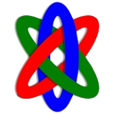

Sustainable, Open Source Alternatives Exist
by
Tracy Teal,
Daniella Lowenberg,

Tim Smith,
Jose Benito Gonzalez Lopez,
 Lars Holm Nielsen,
Lars Holm Nielsen,
 Alex Ioannidis,
on August 27, 2020
Alex Ioannidis,
on August 27, 2020
Recently, the 4TU.ResearchData team published a blog post on their decision to take a commercial route through their repository tender process. As allies in the community, we are glad to know they have found a path forward that fits their needs. Discussions and analyses about scholarly communications infrastructure are important to ensure we’re exploring all options of technical, community and governance structures. There are tradeoffs, challenges, and opportunities in each situation, and each organization needs to make its own decisions based on their own set of constraints. Specifically, organizations need to consider resourcing in thinking about a hosted solution or maintaining infrastructure themselves.
In furthering this conversation, we want to respond to their post, with concerns about several statements that inaccurately represent the ecosystem and organizations who have long supported open source infrastructure for research data. The blog’s central question is: “We need sustainable long-term open source alternatives, who will that be?” Our answer is that these infrastructure do exist and we aim to correct this messaging, shining light on those that have long served as these sustainable, open, alternatives.
As the organizations identified in the post: Dryad and CERN’s Digital Repositories Team responsible for InvenioRDM and Zenodo, we feel that the authors have overlooked the strong communities and infrastructure built up in both of our Dryad and CERN worlds over the last decade. There was an implication in the post that the decision was made around features and capabilities, whereas it was the structure of the process that excluded non-commercial open source solutions. Both of our teams met, separately and briefly (a single 1-hour meeting), with the 4TU.ResearchData team in 2019. Our takeaways were similar: the tender process was not one in which we would be able to compete, so we did not continue conversations. The decision was not made because of features, pilot-phases, or other product judgements. Our organizations were not represented in the tender process because the framework of this organizational decision-making processes, specifically, the bureaucracy of the tender process, presented a number of challenges eliminating us from the competition. These same challenges, which are faced by other nonprofits and government agencies, inherently favor commercial entities that are well-suited to go through the process.
Another implication in the post was that hosted solutions and open source software are mutually exclusive, which is not the case. Dryad is a hosted open-source community that institutions, publishers, and funders utilize. Additionally, many commercial entities run their technology on open source solutions (e.g., Haplo and TIND). It serves only to further discredit the success of open source infrastructure if we do not acknowledge the backbone role various systems play across the repository and open research space.
We appreciate that there is now broader support for community infrastructure like ours. IOI is an example of an organization in this space looking to support and synthesize infrastructure. As supporters of research from all aspects of the process – institutions, funders, publishers, etc, it is important that we continue to boost the open-source communities that researchers have owned and adopted for many years. Additionally, we need to consider barriers to participation in a selection process. We have to question: if processes like the tender exclude these solutions, is the tender process the best way to reach a decision for how institutions can best support their community and researchers? Instead of focusing on creating new infrastructure, or disregarding the existence of current supported infrastructure, we should be partnering to find ways to better the workflows and repositories in place to support open research.
Sustainable, open source alternatives for open research infrastructure not only exist but also thrive. Processes that disfavour non-commercial platforms and communities will continue to feed this cycle of questioning the sustainability of our well-adopted and researcher-supported platforms and illogically promote belief that commercial solutions are more sustainable and well suited to meet researcher needs. Rather than masking these decisions with feature comparisons, not being fully transparent about the challenges and politics presented, we should adopt accessible processes that promote all options that can best meet open science goals, and not knock down the well supported ecosystem that exists along the way.
Why we are removing the Altmetric.com badges
by
 Alex Ioannidis,
Jose Benito Gonzalez Lopez,
Alex Ioannidis,
Jose Benito Gonzalez Lopez,
 Lars Holm Nielsen,
Tim Smith,
on July 9, 2020
Lars Holm Nielsen,
Tim Smith,
on July 9, 2020

Since its launch in 2013 Zenodo has been displaying the free Altmetric.com badge on our records. The badge displays a score and a colorful wheel which provides access to explore further the discussion happening online about your work (e.g. on Twitter or blogs). The main reasons for us to display the badge has always been to allow our users to discover the online discussion happening around their uploads.
We have recently been contacted by Altmetric.com, who has informed us that their free tier which we have been using on Zenodo has been discontinued and that we must pay a commecial rate in order to continue using the service. This has triggered us to re-evaluate why and if we should display the Altmetric.com badge.
We strongly believe that metadata about records including citation data and other data used for computing metrics should be freely available without barriers, so that companies can compete on providing services rather than monopolise through control of data. For instance, the citation data we display on Zenodo is all harvested from freely available data sources, and our own metadata is made freely available to everyone under a CC0 waiver. Moreover, we are in the process of openly sharing usage statistics data with services such as DataCite and OpenAIRE, in order for our users to get a more complete picture of their impact.
Altmetric.com works by crawling the internet to create a large dataset of links and provides limited access to this dataset via e.g. the Altmetric.com badge. When such datasets are not freely available without barriers for others to build services on, the controlling company can exclusively, at any moment, change the access rights or their fees.
So, when triggered to reflect on it, we now see that the use of the Altmetric.com badge is not aligned with one of our core values of Open Data. We have therefore decided that we will remove the badge from Zenodo. We would like to thank Altmetric.com for the service they have provided through the years. Instead, we will look for a solution based on Open Data that enables our users to discover the online conversation about their work, and make this solution available for other repositories to use via the InvenioRDM platform. In the short-term, this decision may well be more expensive than paying Altmetric.com for their service, but has been taken to stay true to our core values, and with a long-term view of a collaborative better future.
We ask our users to be patient while we work on an alternative solution.
Slow or inaccessible zenodo.org
by
 Alex Ioannidis,
on June 9, 2020
Alex Ioannidis,
on June 9, 2020
During the past week, our users may have experienced that Zenodo was slow or inaccessible at certain times. This was caused by several independent incidents during the past week.
May 30th, stale database connections (resolved)
On May 30th, a large fraction of requests to zenodo.org would result in an error. The root cause was stale connections between the database server and the network file storage hosting the database files due to a faulty client software version. The incident happened during European night time outside normal business hours and required the intervention of the CERN database infrastructure experts to fully resolve the issue, which unfortunately meant it took a total of 10 hours to fully investigate and resolve the issue.
Abnormal traffic patterns (ongoing)
During the past week, Zenodo has been hit by abnormal traffic patterns from automated clients for which our multiple existing measures (e.g. rate-limiting) have not been able to keep the traffic flow properly balanced between clients accessing zenodo.org.
All Zenodo staff are assigned to resolving the issue, and we have implemented several measures during the past week that unfortunately have not been enough to get the traffic flow under control. We continue to implement further measures, however, some of these operations are comparable to changing tires on a truck driving at full speed and thus takes time and requires utmost care.
We hope to soon have traffic flow under control, and apologise for the inconveniences it may have caused.